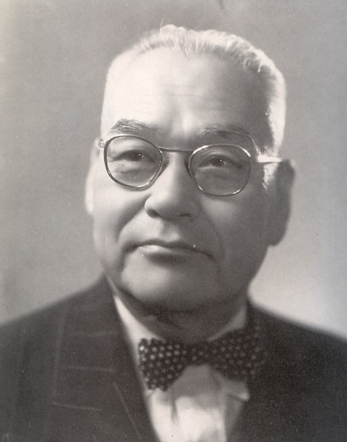
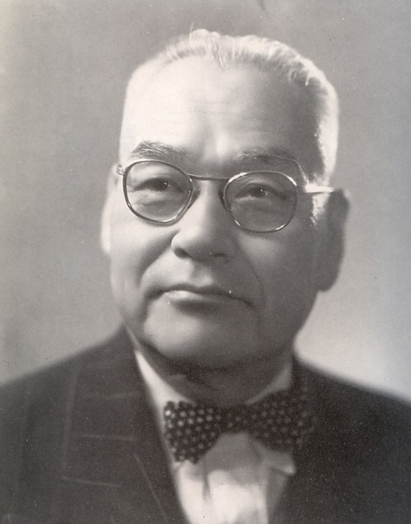

쿠민이를 소개합니다.
자랑스러운 국민대의 마스코트로 오늘 국민대 기록 여행을 도와줄 길잡이 입니다!
오늘 살펴 볼 기록은 '이교위가 사필귀정(以敎爲家 事必歸正)' 입니다.
국민대의 건학이념인 이 교훈은 학교의 설립과 함께하여 지금까지 그 의미가 이어지고 있습니다.
국민대는 임시정부의 독립정신을 잇는 민족사학으로 출발했지만 마땅한 재단의 부재로 어려움 속에서 공부를 이어갔는데,
부실한 재단에 어떠한 지원도 기댈 수 없는 현실에서 학생들은 자치적으로 교사를 신축하기로 하고 학생건축위원회를 결성하였습니다.
하지만, 재단 측은 끊임없이 공사를 방해하였습니다.
이때 해공 신익희 선생은 “모든 학생들이 희생을 각오하고 학교를 설립하고 정진해 달라”며 이교위가와 사필귀정을 강조하였습니다.
이러한 교훈 속에서 1949년 9월 연건평 280평의 목조 2층의 창성동 교사가 완공되었습니다.
그 뒤 이 교훈은 건학이념으로 자리 잡아 입학식, 졸업식, 그리고 각종 학교 기념 행사 때마다 그 의미가 강조되었습니다.
어떤 이는 이교위가 사필귀정의 의미를 '학교를 내 집 같이 사랑하고 나라를 내 집 같이 사랑하자'라고 해석하기도 하며,
누군가는 '내 집 처럼 학교의 물자를 절약하고 서로 화합하자'라는 뜻으로 풀이하기도 합니다.
하지만 결국 중요한 것은, 우리의 교훈을 마음 속에 새기고 조금씩 각자의 방식으로 실천하는 것이라 생각합니다!
이번 기회에 내가 생각하는 이교위가 사필귀정이 무엇인지 생각해보면 어떨까요?
대면으로 전환되고 학교 곳곳에 활기가 돌고 있습니다.
앞으로 더 활기차질 학교 생활을 기대하고 학교와 우리 모두를 아끼는 하루하루를 보내시길 바랍니다!
앞으로도 기록물관리위원회의 활동에 많은 관심 부탁드립니다~